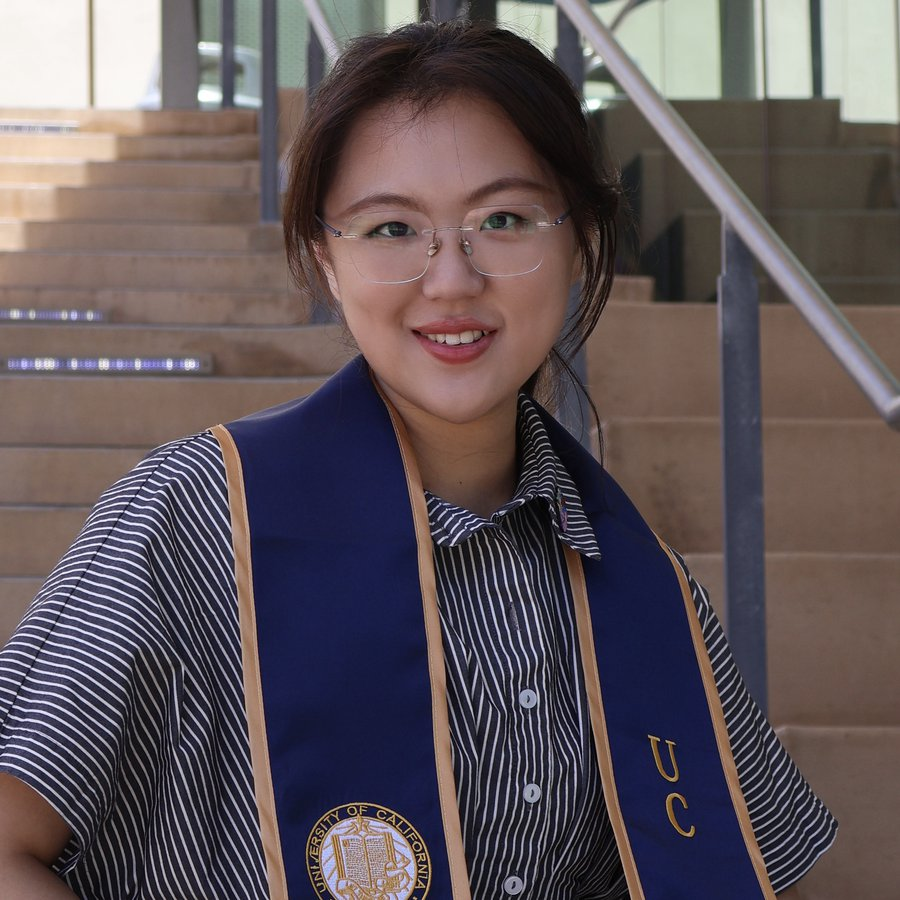

Harvard University Expected Dec. 2027 | Boston, MA
M.S. in Health Data Science
Courses: Advanced Practical Data Science (MLOps), Statistical Inference, AI in Operations, Computing for Big Data
Data Science · Machine Learning
I turn data into products and decisions that work for real people.
Working on

Hello! 👋 I'm an M.S. in Health Data Science student at Harvard University. I received my B.S. in Cognitive Science (Machine Learning specialization) and Neuroscience from UC San Diego, and I'm interested in applied ML and data science applications in healthcare.
M.S. in Health Data Science
Courses: Advanced Practical Data Science (MLOps), Statistical Inference, AI in Operations, Computing for Big Data
B.S. in Cognitive Science (Machine Learning specialization) and Neuroscience · GPA 3.91/4.0
Honors: Halıcıoğlu Data Science Institute (HDSI) Undergraduate Scholarship; 4 years UCSD Provost Honors
Data Science Research Assistant
Bioinformatics Technician Intern
Intelligent Systems and Engineering Research Center Intern
Harvard AC215 (MLOps) Project
Neuromatch Academy — Deep Learning course project (PyTorch)
Student Consultant